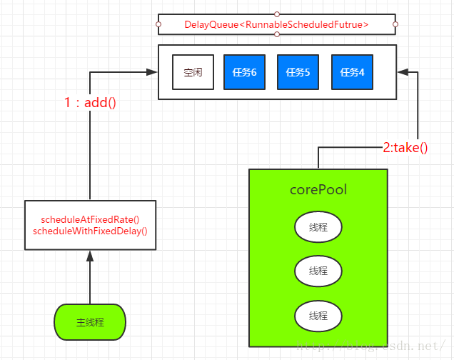

Java线程池&Executor框架
Executor 框架基础
为什么需要线程池？
在 Java中，使用线程来执行异步任务时，线程的创建和销毁需要一定的开销，如果我们为每一个任务创建一个新的线程来执行的话，那么这些线程的创建与销毁将消耗大量的计算资源，这样的方式可能会使处于高负荷状态的应用最终崩溃。
我们将在线程池中创建若干条线程，当有任务需要执行时就从该线程池中获取一条线程来执行任务，如果一时间任务过多，超出线程池的线程数量，那么后面的线程任务就进入一个等待队列进行等待，直到线程池有线程处于空闲时才从等待队列获取要执行的任务进行处理，这样就大大减少了线程创建和销毁的开销。
两级调度模型
在 Java 线程启动时会创建一个本地操作系统线程，当该 Java 线程终止时，这个操作系统线程也会被回收。而每一个 Java 线程都会被一对一映射为本地操作系统的线程，操作系统会调度所有的线程并将它们分配给可用的 CPU。
在上层，Java 多线程程序把应用分为若干个任务，然后使用用户级的调度器（Executor框架）将这些任务映射为固定数量的线程；在底层，操作系统内核将这些线程映射到硬件处理器上。这种两级调度模型如下图所示：
应用程序通过 Executor 框架控制上层的调度，而下层的调度由操作系统内核控制。
Executor 框架的结构
Executor 框架的结构主要包括三部分：
- 任务：包括被执行任务需要实现的接口：Runnable 接口或 Callable 接口。
- 任务的执行：包括任务执行机制的核心接口 Executor，以及继承自 Executor 的 EexcutorService 接口。Executor 的两个关键类实现了 ExecutorService 接口（ThreadPoolExecutor 和ScheduledThreadPoolExecutor）。
- 异步计算的结果：包括接口 Future 和实现 Future 接口的 FutureTask 类。
Extecutor 是一个接口，它是 Executor 框架的基础，它将任务的提交与任务的执行分离开来。
ThreadPoolExecutor 是线程池的核心实现类，用来执行被提交的任务。
ScheduledThreadPoolExecutor 是一个实现类，可以在给定的延迟后运行命令，或者定期执行命令。
Future 接口和实现 Future 接口的 FutureTask 类，代表异步计算的结果。
Runnable 接口和 Callable 接口的实现类，都可以被 ThreadPoolExecutor 或者 ScheduledThreadPoolExecutor 执行。区别就是 Runnable 无法返回执行结果，而 Callable 可以返回执行结果。
ThreadPoolExecutor
ThreadPoolExecutor 是线程的真正实现，通常使用工厂类 Executors 来创建，但它的构造方法提供了一系列参数来配置线程池.
1 | public ThreadPoolExecutor(int corePoolSize, |
corePoolSize：线程池的核心线程数，默认核心线程会一直在线程池中存活，即使它们处理闲置状态。
maximumPoolSize：线程池所能容纳的最大线程数量，当活动线程数到达该数值后，后续的新任务将被阻塞。
keepAliveTime：非核心线程闲置时的超时时长，超过时长非核心线程就会被回收。当 ThreadPoolExecutor 的 allowCoreThreadTimeOut 属性设置为 true 时，keepAliveTime 同样会作用于核心线程。
unit：用于指定 keepAliveTime 参数的时间单位。常用的有 TimeUnit.MILLISECONDS(毫秒)，TimeUnit.SECONDS(秒)以及 TimeUnit.MINUTES(分钟)等。
workQueue：线程池中的任务队列，通过线程池的 execute 方法提交的 Runnable 对象会存储在这个队列中。
threadFactory：线程工厂，为线程池提供创建新线程的功能。ThreadFactory 是一个接口，它只有一个方法：Thread newThread(Runnable r)。
defaultHandler：RejectExecutionHandler，这个参数表示当 ThreadPoolExecutor 已经关闭或者已经饱和时，execute 方法将会调用 Handler 的 rejectExecution 方法来通知调用者，默认情况下是抛出一个RejectExecutionException 异常。
ThreadPoolExecutor 执行任务时的大致规则：
- 如果线程池的数量还未达到核心线程的数量，那么会直接启动一个核心线程来执行任务。
- 如果线程池中的线程数量已经达到或者超出核心线程的数量，那么任务会被插入到任务队列中排队等待执行。
- 如果在步骤 2 中无法将任务插入到任务队列中，这往往是由于任务队列已满，这个时候如果线程数量未达到线程池规定的最大值，那么会立刻启动一个非核心线程来执行任务。
- 如果在步骤 3 中线程数量已经达到线程池规定的最大值，那么就会拒绝执行此任务， ThreadPoolExecutor 会调用 RejectExecutionHandler 的 rejectExecution方法来通知调用者。
常见线程池
FixedThreadPool
FixedThreadPool 模式会使用一个优先固定数目的线程来处理若干数目的任务。
创建 FixedThreadPool 对象的代码：
1 | ExecutorService fixedThreadPool=Executors.newFixedThreadPool(5); |
FixedThreadPool 创建方法源码：
1 | public static ExecutorService newFixedThreadPool(int nThreads) { |
corePoolSize 和 maximumPoolSize 参数都被设置为 nThreads，即核心线程数和最大线程数是一样的。
keepAliveTime 设置为 $0$L，就说明非核心线程会立即被终止。
FixedThreadPool 的 execute() 方法的运行流程：
- 如果当前运行线程数少 corePoolSize，则创建一个新的线程来执行任务。
- 如果当前线程池的运行线程数等于 corePoolSize，那么后面提交的任务将加入 LinkedBlockingQueue。
- 线程在执行完图中的 $1$ 后，会在循环中反复从 LinkedBlockingQueue 获取任务来执行。
- FixedThreadPool 使用无界队列 LinkedBlockingQueue 作为线程池的工作队列（队列容量为Integer.MAX_VALUE），所以运行中的 FixedThreadPool 不会拒绝任务，那么也不会调用 RejectExecutionHandler 的 rejectExecution 方法抛出异常。
案例代码：
1 | public class my implements Runnable{ |
1 | import java.util.concurrent.ExecutorService; |
运行结果：
1 | #Thread0(2) |
CachedThreadPool
CachedThreadPool 首先会按照需要创建足够多的线程来执行任务。随着程序执行的过程，有的线程执行完任务可以被重新循环使用时，才不再创建新的线程。
创建 CachedThreadPool 对象的代码：
1 | ExecutorService cachedThreadPool=Executors.newCachedThreadPool(); |
CachedThreadPool 创建方法源码：
1 | public static ExecutorService newCachedThreadPool() { |
CachedThreadPool 的 corePoolSize 被设置为 $0$，而 maximumPoolSize 被设置 Integer.MAX_VALUE，即 maximumPoolSize 是无界的，而 keepAliveTime 被设置为 60L，单位为秒。也就是空闲线程等待时间最长为 $60$ 秒，超过该时间将会被终止。CachedThreadPool 使用的是没有容量的 SynchronousQueue 作为线程池的工作队列，但其 maximumPoolSize 是无界的，也就是意味着如果主线程提交任务的速度高于 maximumPoolSize 中线程处理任务的速度时 CachedThreadPool 将会不断的创建新的线程，在极端情况下， CachedThreadPool 会因为创建过多线程而耗尽 CPU 和内存资源。
CachedThreadPool 的 execute() 方法的运行流程：
- 首先执行 SynchronousQueue.offer(Runnable task)，添加一个任务。如果当前 CachedThreadPool 中有空闲线程正在执行 SynchronousQueue.poll，那么主线程执行 offer 操作与空闲线程执行 poll 操作配对成功，主线程把任务交给空闲线程执行，execute() 方法执行完成，否则进入第 2 步。
- 当 CachedThreadPool 初始线程数为空时，或者当前没有空闲线程，CachedThreadPool 会创建一个新的线程来执行任务， execute() 方法执行完成。
- 在步骤 2 中创建的新线程将任务执行完成后，会执行 SynchronousQueue.poll，这个 poll 操作会让空闲线程最多在 SynchronousQueue 中等待 $60$ 秒，如果 $60$ 秒内主线程提交了一个新任务，那么这个空闲线程将会执行主线程提交的新任务，否则，这个空闲线程将被终止。因此长时间保持空闲的 CachedThreadPool 是不会使用任何资源的。
案例代码：
1 | public class CachedThreadPool { |
SingleThreadExecutor
SingleThreadExecutor 模式只会创建一个线程。如果多个任务被提交给 SingleThreadExecutor，那么这些任务会被保存在一个队列中，并且会按照任务提交的顺序，一个先执行完成再执行另外一个线程。这种特点可以用来处理共享资源的问题而不需要考虑同步问题。
创建 SingleThreadExecutor 对象的代码：
1 | ExecutorService singleThreadExecutor=Executors.newSingleThreadExecutor(); |
SingleThreadExecutor 创建方法源码：
1 | public static ExecutorService newSingleThreadExecutor() { |
从静态方法可以看出 SingleThreadExecutor 的 corePoolSize 和 maximumPoolSize 被设置为 $1$，其他参数则与 FixedThreadPool 相同。
案例代码：
1 | public class SingleThreadExecutor { |
适用场景
FixedThreadPool：适合为了满足资源管理需求，而需要限制当前线程的数量的应用场景，它适用于负载比较重的服务器。
CachedThreadPool：大小无界的线程池，适用于执行很多的短期异步任务的小程序，或者负载较轻的服务器。SingleThreadExecutor：适用于需要保证执行顺序地执行各个任务；并且在任意时间点，不会有多个线程是活动的场景。
ScheduledThreadPoolExecutor
ScheduledThreadPoolExecutor 运行机制
ScheduledThreadPoolExecutor 继承自 ThreadPoolExecutor。它主要用来在给定的延迟之后执行任务，或者定期执行任务。ScheduledThreadPoolExecutor 的功能与 Timer 类似，但比 Timer 更强大，更灵活，Timer 对应的是单个后台线程，而 ScheduledThreadPoolExecutor 可以在构造函数中指定多个对应的后台线程数。
ScheduledThreadPoolExecutor 的运行机制：

- 当调用 ScheduledThreadPoolExecutor 的
scheduleAtFixedRate()方法或者scheduleWithFixedDelay()方法时，会向 DelayQueue 添加一个实现了 RunnableScheduledFuture 接口的 ScheduleFutureTask。DelayQueue 是一个无界队列。 - 线程池中的线程从 DelayQueue 中获取 ScheduleFutureTask，然后执行任务。
ScheduledThreadPoolExecutor 的创建
Executors 可以创建两种类型的 ScheduledThreadPoolExecutor。
ScheduledThreadPoolExecutor：可以执行多线程任务。
1
2public static ScheduledExecutorService newScheduledThreadPool(int corePoolSize)
public static ScheduledExecutorService newScheduledThreadPool(int corePoolSize, ThreadFactory threadFactory)创建实例：
1
ScheduledExecutorService scheduledThreadPoolExecutor=Executors.newScheduledThreadPool(5);
SingleThreadScheduledExecutor：可以执行单条线程。
1
2public static ScheduledExecutorService newSingleThreadScheduledExecutor()
public static ScheduledExecutorService newSingleThreadScheduledExecutor(ThreadFactory threadFactory)创建实例：
1
ScheduledExecutorService singleThreadScheduledExecutor=Executors.newSingleThreadScheduledExecutor();
ScheduledThreadPoolExecutor 案例
首先创建一个 Runnable 对象，然后使用 ScheduledThreadPoolExecutor 的 Scheduled() 来执行延迟任务，输出执行时间。
$(1)$ 延迟执行
1 | public ScheduledFuture<?> schedule(Runnable command,long delay, TimeUnit unit); |
command：一个实现 Runnable 接口的类。
delay：延迟时间。
unit： 用于指定 keepAliveTime 参数的时间单位。
这个方法会返回 ScheduledFuture 实例，用于获取线程状态信息和延迟时间。
1 | import java.text.SimpleDateFormat; |
1 | import java.text.SimpleDateFormat; |
运行结果：
1 | Current Time = 2021-08-07 18:11:10 |
线程任务确实在 $10$ 秒延迟后才开始执行，这就是 schedule() 方法的使用。
$(2)$ 周期性执行
scheduleAtFixedRate 方法
1
public ScheduledFuture<?> scheduleAtFixedRate(Runnable command,long initialDelay,long period,TimeUnit unit)
scheduleAtFixedRate 方法的作用是预定在初始的延迟结束后，周期性地执行给定的任务，周期长度为 period，其中 initialDelay 为初始延迟。
scheduleWithFixedDelay 方法
1
public ScheduledFuture<?> scheduleWithFixedDelay(Runnable command,long initialDelay,long delay,TimeUnit unit);
scheduleWithFixedDelay 方法的作用是预定在初始的延迟结束后周期性地执行给定任务，在一次调用完成和下一次调用开始之间有长度为 delay 的延迟， 其中 initialDelay 为初始延迟。
案例代码：
1 | import java.util.Date; |
运行结果：
1 | 当前线程：pool-1-thread-2 当前时间：Sat Aug 07 19:10:58 CST 2021 |